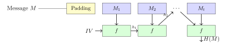

Chapter 4: Cryptographic Hash Functions and MACs¶
Hash functions appear in nearly every cryptographic protocol — digital signatures, message authentication, key derivation, commitment schemes, and data integrity checks all depend on them. This chapter covers the security properties they must satisfy, the main algorithm families, and the MAC constructions built on top of them.
4.1 Cryptographic Hash Functions¶
Definition 4.1 (Cryptographic Hash Function)
A hash function \(H: \{0,1\}^* \to \{0,1\}^n\) must satisfy:
-
Preimage resistance: Given \(y\), hard to find \(x\) with \(H(x) = y\). (One-way)
-
Second preimage resistance: Given \(x\), hard to find \(x' \neq x\) with \(H(x') = H(x)\).
-
Collision resistance: Hard to find any \(x \neq x'\) with \(H(x) = H(x')\).
Collision resistance \(\Rightarrow\) second preimage resistance \(\Rightarrow\) preimage resistance (for fixed output length).
The three properties serve different protocol roles. Preimage resistance is what makes password hashing useful: you can store \(H(\text{password})\) without storing the password, and a database leak doesn’t immediately hand attackers the passwords. Second preimage resistance is what digital signatures rely on: if an attacker can find a different document with the same hash as the one you signed, they can forge your signature on their document. Collision resistance is the strongest property and is what certificate authorities need: if MD5 has collisions, two different certificate requests could hash to the same value, allowing a fraudulent certificate to carry a legitimate CA signature.
4.1.1 The SHA Family¶
SHA-256 (SHA-2)¶
SHA-256 uses the Merkle-Damgård construction with Davies-Meyer compression function:

SHA-256 constants: 8 initial hash values from fractional parts of square roots of the first 8 primes; 64 round constants from fractional parts of cube roots of the first 64 primes.
Round function: \(\Sigma_0, \Sigma_1\) (rotation-based), \(\text{Ch}\) (choice), \(\text{Maj}\) (majority) functions operating on 32-bit words.
The rotation-based operations in SHA-256 are designed to spread individual bit changes across the entire 256-bit state within a small number of rounds — the avalanche property. A single flipped input bit should, after a few rounds, have changed approximately half the output bits in an unpredictable pattern. The SHA-2 designers chose specific rotation amounts to maximize this diffusion based on algebraic and differential analysis of candidate designs. SHA-256 processes each 512-bit message block through 64 rounds before producing an intermediate hash value, ensuring any local correlation between input and output is destroyed.
SHA-3 (Keccak)¶
SHA-3 uses the sponge construction — fundamentally different from Merkle-Damgård:
-
State: \(1600\)-bit permutation state (for SHA3-256)
-
Absorb: XOR message blocks into rate portion of state; apply Keccak-\(f[1600]\) permutation
-
Squeeze: Extract output from rate portion of state
-
Properties: Resistant to length-extension attacks (SHA-2 is vulnerable); SHAKE-128/256 provides variable-length output (XOF)
The sponge construction’s security argument is cleaner than Merkle-Damgård’s. If the inner permutation is modeled as a random permutation, the sponge is provably indistinguishable from a random oracle, with security bounded by the capacity (the hidden portion of the state). For SHA3-256, the state is 1600 bits split into 1088-bit rate and 512-bit capacity; the 512-bit capacity gives 256 bits of security against collision attacks. By contrast, Merkle-Damgård’s security relies on the compression function being collision resistant, which is a stronger and less elegant assumption.
SHA-3 wasn’t adopted because SHA-2 was broken — SHA-2 remains secure. NIST ran the SHA-3 competition (2007–2012) as insurance: if weaknesses were found in SHA-2’s Merkle-Damgård structure, the cryptographic community would already have a tested, analyzed alternative. Keccak won the competition. Having SHA-3 available has already proven valuable for protocols that need length-extension immunity or variable-length output (SHAKE variants), which SHA-2 can’t provide natively.
| Algorithm | Output | Block | Security | Vulnerable to Extension |
|---|---|---|---|---|
| MD5 | 128 bits | 512 bits | Broken | Yes |
| SHA-1 | 160 bits | 512 bits | Broken (2017) | Yes |
| SHA-256 | 256 bits | 512 bits | 128 bits | Yes |
| SHA-384 | 384 bits | 1024 bits | 192 bits | No (truncated) |
| SHA-512 | 512 bits | 1024 bits | 256 bits | Yes |
| SHA3-256 | 256 bits | Sponge | 128 bits | No |
| SHA3-512 | 512 bits | Sponge | 256 bits | No |
| BLAKE2b | 512 bits | 1024 bits | 256 bits | No (keyed) |
4.1.2 The Birthday Attack¶
Theorem 4.1 (Birthday Bound)
In a group of \(k\) people, the probability that two share a birthday exceeds \(50\%\) when \(k \approx 1.17\sqrt{N}\) (where \(N\) is the number of possible birthdays). For hash functions with \(n\)-bit output, collisions are expected after approximately \(2^{n/2}\) evaluations.
The birthday attack works because you’re not looking for one specific collision — you’re looking for any collision among the hashes you’ve computed. With \(2^{n/2}\) hashes stored, there are roughly \(2^n/2\) pairs, and by the birthday bound the expected number of collisions among them is around one. This is a much weaker requirement than finding a preimage (which would take \(2^n\) evaluations), and it’s why a 128-bit hash provides only 64-bit collision resistance.
In practice, birthday attacks enable chosen-prefix collisions, which are more powerful than simple collisions. In a chosen-prefix collision, the attacker can pick two different meaningful prefixes \(P_1\) and \(P_2\), then find suffixes \(S_1\) and \(S_2\) such that \(H(P_1 \| S_1) = H(P_2 \| S_2)\). This is what made the 2008 MD5 rogue CA certificate attack practical: the attacker built two certificate requests with different legitimacy but the same hash, causing the CA’s signature on the legitimate one to also validate the fraudulent one.
Example 4.1 (Birthday Attack on MD5)
MD5 produces 128-bit output. A birthday attack requires approximately \(2^{64}\) hash evaluations, which is feasible with modern GPU clusters. The 2008 Chosen-Prefix Collision Attack required only \(2^{49}\) operations and was used to forge a rogue CA certificate.
SHAttered (2017): Google and CWI Amsterdam produced the first practical SHA-1 collision: two different PDF files with identical SHA-1 hash. The attack required \(2^{63.1}\) SHA-1 compressions. SHA-1 is now completely deprecated.
4.1.3 Length Extension Attacks¶
Length Extension Attack on SHA-256
For Merkle-Damgård hash functions (SHA-256, SHA-512):
If \(H(m)\) is known, an attacker can compute \(H(m \| \text{padding} \| m')\) for any \(m'\) without knowing \(m\).
Impact: APIs using \(\mathrm{HMAC} = H(k \| m)\) are vulnerable: the attacker extends a forged message.
Real-world: Flickr API (2009), many web APIs using improper MAC construction.
Defense: Use HMAC (which wraps the key in two hash computations) or SHA-3.
The length extension attack exploits the fact that the Merkle-Damgård final hash state is exactly the input you’d need to continue hashing. If you see \(H(m)\), you know the internal state of the hash function after processing \(m\) (plus padding), and you can resume hashing from there without knowing \(m\). This is why \(H(k \| m)\) as a MAC is broken: the attacker computes \(H(k \| m \| \text{padding} \| m')\) from just the hash output and their chosen \(m'\), without ever knowing \(k\). The attack is algebraically clean and requires zero cryptanalysis of the hash function itself.
4.2 Message Authentication Codes (MACs)¶
Definition 4.2 (MAC)
A MAC scheme \((\mathsf{Gen}, \text{Mac}, \text{Vrfy})\):
-
\(\mathsf{Gen}(1^\lambda) \to K\): generates key \(K\)
-
\(\text{Mac}(K, m) \to t\): produces tag \(t\) for message \(m\)
-
\(\text{Vrfy}(K, m, t) \to \{0,1\}\): verifies tag
Security: existential unforgeability under chosen-message attack (EU-CMA).
A MAC is a keyed hash: only parties with the shared key can produce valid tags. Unlike a digital signature, MAC verification is symmetric — the same key creates and verifies the tag, so MACs can’t provide non-repudiation (either party could have created the tag). For communication between two parties sharing a symmetric key (like TLS session parties), MACs are the right tool; for proving to a third party who created a message, digital signatures are needed.
4.2.1 HMAC¶
Definition 4.3 (HMAC Construction (RFC 2104))
where \(K'\) is \(K\) padded to block size, \(\texttt{opad} = \texttt{0x5c...5c}\), \(\texttt{ipad} = \texttt{0x36...36}\).
HMAC-SHA256 is PRF-secure under the assumption that the underlying compression function is a PRF. It’s immune to length-extension attacks.
The double-hash structure is specifically what kills length extension. The inner hash \(H(\text{ipad} \| K \| m)\) produces an intermediate value that an attacker can’t extend from, because to compute \(H(\text{opad} \| K \| \cdot)\) they’d need to know \(K\). Even if the inner hash had a length-extension vulnerability, the outer hash prevents it from being exploited. The ipad and opad constants aren’t arbitrary: they ensure the inner and outer keys are different (XOR difference is \(\texttt{0x6a...6a}\)), so an attacker can’t correlate the two hash evaluations.
import hmac
import hashlib
import os
key = os.urandom(32) # 256-bit key
message = b"Authenticated message"
tag = hmac.new(key, message, hashlib.sha256).digest() # 32-byte tag
# Verify (constant-time comparison to prevent timing oracle)
def verify_mac(key, message, tag):
expected = hmac.new(key, message, hashlib.sha256).digest()
return hmac.compare_digest(expected, tag) # Constant-time
assert verify_mac(key, message, tag)
Timing Oracle Attack on MAC Verification
A non-constant-time comparison (e.g., Python == or C strcmp) leaks the position of the first byte mismatch. An attacker can forge a valid MAC byte-by-byte with \(O(256n)\) queries (where \(n\) is MAC length in bytes). Always use hmac.compare_digest() or equivalent constant-time comparison.
The timing oracle attack on MAC verification is a subtle but real threat. A strcmp-style comparison returns immediately when it finds the first mismatching byte, so a comparison that takes slightly longer has more matching leading bytes. With enough measurements (to average out network jitter and clock noise), an attacker can determine the correct MAC one byte at a time: try all 256 values for byte 0, pick the one that takes longest, move to byte 1, and repeat. This is practical against local services with low timing noise. hmac.compare_digest() compares all bytes regardless of where the first mismatch is, returning in constant time.
4.2.2 CMAC (Cipher-Based MAC)¶
CMAC (NIST SP 800-38B) uses AES as a block cipher MAC:
-
Process message blocks through CBC-like mode with XOR tweaks \(L\), \(2L\)
-
Sub-key generation: \(L = E_K(0^n)\); \(K_1 = 2L\); \(K_2 = 4L\) (in \(\mathbb{F}_{2^n}\))
-
Tag = final CBC-MAC block XORed with appropriate sub-key
-
Used in: IPsec (RFC 4493), S/MIME, NIST protocols
4.2.3 Poly1305¶
Polynomial MAC used with ChaCha20:
Properties: \(r, s\) are 128-bit one-time keys; \(r\) is clamped to reduce bias; \(2^{130}-5\) is a pseudo-Mersenne prime for efficient arithmetic. Provided as ChaCha20-Poly1305 in TLS 1.3 (RFC 8439).
Poly1305 is a one-time MAC: the key pair \((r, s)\) must never be reused. In ChaCha20-Poly1305, the MAC key is derived from the ChaCha20 keystream so it’s automatically fresh with each nonce; this is why nonce reuse in ChaCha20-Poly1305 is catastrophic — it not only reuses the encryption keystream, it also reuses the MAC key, breaking authentication as well. The pseudo-Mersenne prime \(2^{130} - 5\) enables fast reduction on 64-bit hardware by exploiting the structure of the modulus in ways that a random prime wouldn’t support.
4.3 Key Derivation Functions (KDFs)¶
Definition 4.4 (Key Derivation Function)
A KDF derives one or more cryptographic keys from a source of keying material (IKM) and optional context/salt:
KDFs serve a purpose distinct from hash functions: they turn potentially weak or structured keying material into strong, uniformly distributed keys. A Diffie-Hellman shared secret, for example, is a group element with algebraic structure — it’s not simply random bits. Passing it through HKDF removes the structure and produces output indistinguishable from random, regardless of the DH group’s specific structure. Similarly, a user’s password has low entropy and predictable patterns; a password-based KDF adds a work factor to slow brute-force attacks before producing the actual encryption key.
4.3.1 HKDF (RFC 5869)¶
Two-phase construction:
-
Extract: \(\text{PRK} = \mathrm{HMAC}(\text{salt}, \text{IKM})\) — concentrate entropy
-
Expand: \(K_i = \mathrm{HMAC}(\text{PRK}, K_{i-1} \| \text{info} \| i)\) — expand to needed length
HKDF is used in TLS 1.3’s key schedule, the Signal protocol, and WhatsApp E2EE.
The Extract-then-Expand structure handles two different problems separately. Extract takes potentially non-uniform input (a DH output, a password hash, a hardware random value) and produces a uniformly distributed pseudo-random key (PRK) of fixed size. Expand then stretches that PRK into however many key bytes the protocol needs, binding different keys to different info strings so the encryption key, the MAC key, and the IV are all cryptographically independent even though they came from the same PRK. Using the same info string for two different keys would be a subtle but serious mistake — they’d be derived identically.
4.3.2 Password-Based KDFs¶
Password-based KDFs intentionally incorporate significant computational cost (work factor) to slow brute-force attacks:
| KDF | Algorithm | Memory | Parallelism | Use |
|---|---|---|---|---|
| PBKDF2 | HMAC-SHA | Low | No | Legacy; TLS 1.2 PRF |
| bcrypt | Blowfish | Fixed 4KB | No | Unix passwords |
| scrypt | SHA + block mix | High (tunable) | No | Password hashing |
| Argon2id | Blake2 | High (tunable) | Yes | NIST recommended |
The memory-hard requirement in scrypt and Argon2 is specifically designed to defeat GPU and ASIC attacks. A modern GPU can hash billions of PBKDF2-SHA256 iterations per second, because each hash computation is independent and fits entirely in a GPU core’s registers and cache. Memory-hard functions require gigabytes of memory access with sequential read-write patterns that can’t be trivially parallelized across thousands of GPU cores — GPU memory bandwidth becomes the bottleneck, not arithmetic throughput. This levels the playing field between attackers with specialized hardware and defenders using commodity server hardware.
from argon2 import PasswordHasher
ph = PasswordHasher(
time_cost=3, # Number of iterations
memory_cost=65536, # 64 MB memory
parallelism=4, # Parallel threads
hash_len=32, # Output length
salt_len=16 # Salt length
)
# Hash password (includes random salt automatically)
password = "correct-horse-battery-staple"
hash_value = ph.hash(password)
# e.g.: $argon2id$v=19$m=65536,t=3,p=4$...
# Verify (raises VerifyMismatchError on failure)
ph.verify(hash_value, password) # True
# Check if rehash needed (parameters changed)
if ph.check_needs_rehash(hash_value):
hash_value = ph.hash(password) # Re-hash with updated parameters
Password Storage Best Practices
-
Use Argon2id (NIST SP 800-63B recommends) with \(\geq 64\)MB memory
-
Never store plaintext passwords; never use MD5 or SHA alone
-
Always use random salt (\(\geq 16\) bytes, unique per password)
-
Server-side secret key (pepper): \(H(\text{pepper} \| \text{hash})\) — protects against DB leak
-
Have I Been Pwned API: check new passwords against known breach lists
Salting is non-negotiable for password hashing. Without a unique salt per password, an attacker who obtains the password database can precompute hashes for all common passwords once (a rainbow table), then look up every hash in the table simultaneously — attacking millions of accounts at the cost of one computation. With a unique random salt, precomputation doesn’t work: the attacker must hash each candidate password combined with each user’s salt separately, making the attack scale linearly with the number of users. The salt doesn’t need to be secret; it just needs to be unique.
4.4 Commitment Schemes¶
Definition 4.5 (Commitment Scheme)
A commitment scheme lets a prover commit to a value without revealing it, then open the commitment later:
-
\(\text{Commit}(m; r) \to c\): binding (cannot open to different value) and hiding (no info revealed)
-
\(\text{Open}(c, m, r)\): verifier checks \(c = \text{Commit}(m; r)\)
Simple hash commitment: \(c = H(r \| m)\) where \(r\) is a random 256-bit nonce. Hiding follows from \(H\)’s output revealing nothing about \(m\); binding follows from \(H\)’s collision resistance.
The random nonce \(r\) is what makes the commitment hiding. Without \(r\), an attacker could brute-force small message spaces: if the committed message is a price from $1 to $100, they just hash all 100 values and compare. With a 256-bit random nonce, the effective message space is \(2^{256}\) regardless of how small \(m\) is. This is why hash commitments always include randomness — they’re not just hashing the message, they’re hashing the message with a randomly chosen blinding factor.
Commitment schemes underlie auction protocols, coin flipping, zero-knowledge proofs, and blockchain applications.
Exercises¶
Exercise 4.1
Compute SHA-256 of the empty string and of "abc" using Python. Verify against NIST test vectors.
Exercise 4.2
Implement a length-extension attack against \(H(K \| m)\) where \(H\) is SHA-256. Given the hash of K || "original" (assume \(|K| = 32\) bytes), compute the hash of K || "original" || padding || "appended" without knowing \(K\).
Exercise 4.3
Prove that HMAC is secure assuming the underlying hash function’s compression function is a PRF. Why does the double application of the hash prevent length extension?
Exercise 4.4
A web application stores passwords as \(\text{SHA-256}(\text{password})\) without salt. Explain: (a) why this is vulnerable to precomputation (rainbow tables), (b) why the lack of salt enables multi-target attacks, (c) how Argon2id with unique salt addresses both issues.
Exercise 4.5
Design a secure commit-reveal protocol for a two-party coin flip over the internet using hash commitments. Prove it is fair (neither party can bias the result after seeing the other’s commitment).
Exercise 4.6 (Argon2 Tuning)
You must select Argon2id parameters for a web login system. Your goals: (a) at most 500ms authentication time on server hardware, (b) resist GPU-based offline attack requiring \(> 2^{50}\) hash attempts. Discuss how you would tune time_cost, memory_cost, and parallelism.